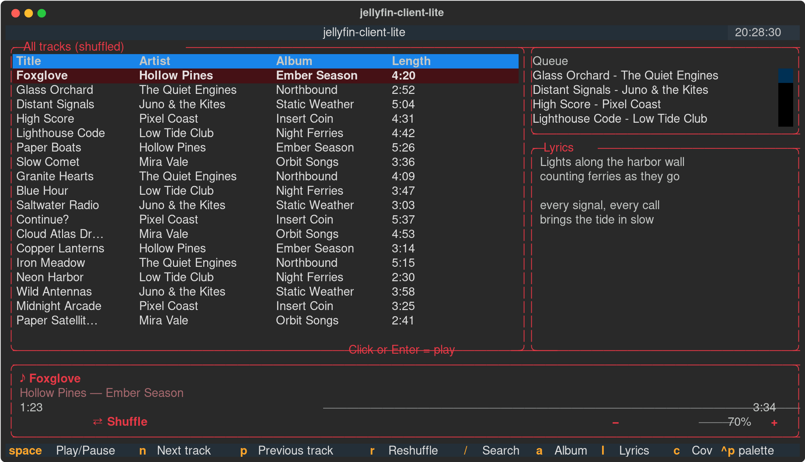

Jellyfin Client Lite
A tiny terminal music player that shuffles your whole Jellyfin library.
Download for Debian / Ubuntu / Linux MintOpen the file and your software center (Discover, GNOME Software, …) installs it. After that, updates arrive together with your normal system updates.
Or in a terminal
wget -O /tmp/jellyfin-client-lite.deb https://epiklal.github.io/jellyfin-client-lite/jellyfin-client-lite.deb sudo apt install /tmp/jellyfin-client-lite.deb
Then start Jellyfin Client Lite from your app menu. The first start asks for your server and logs you in with Quick Connect.
Other systems
Fedora, Arch, Windows and macOS: see the install guide on GitHub.

Source code · Apache-2.0 · Signing key for the APT source